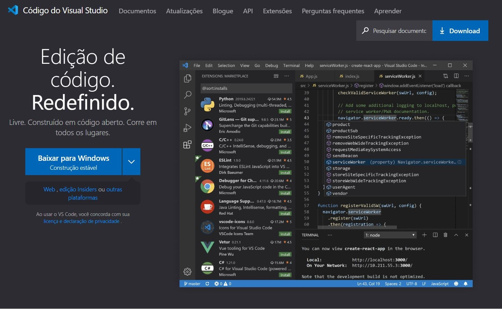
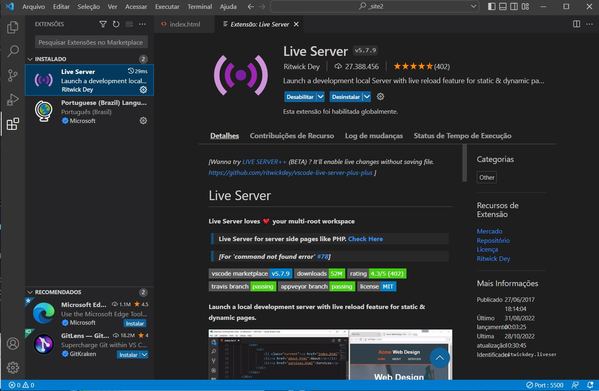
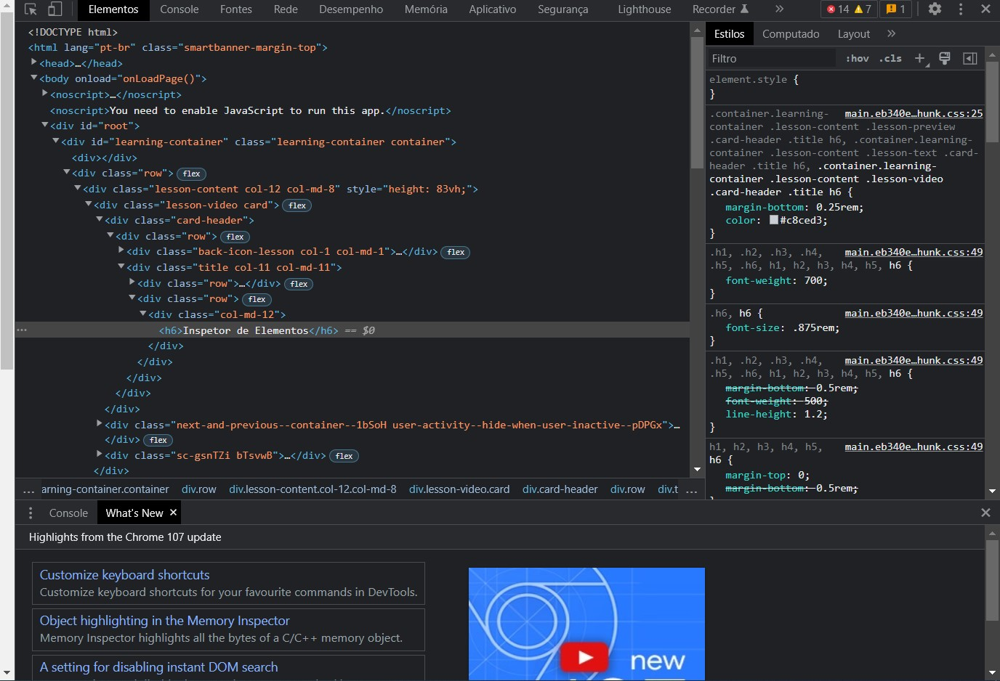
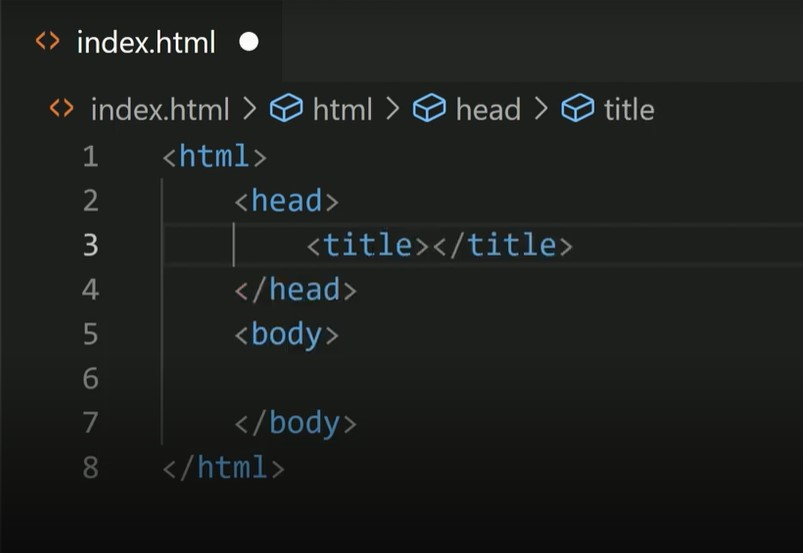

Aprendendo HTML na prática
Indice
Ferramentas
(Voltar)
Para desenvolver uma página html você pode utilizar qualquer editor de textos simples,
porém nesse curso foi utilizado o Visual Studio Code,
que inclusive pode ser acessado para download clicando sobre o nome do mesmo. Ele é um editor de código-fonte desenvolvido pela Microsoft para Windows,
Linux e macOS. Ele inclui suporte para depuração, controle de versionamento Git incorporado, realce de sintaxe, complementação inteligente de código,
snippets e refatoração de código. Ele é customizável, permitindo que os usuários possam mudar o tema do editor, teclas de atalho e preferências.
Ele é um software livre e de código aberto.
 
Após o download, o próximo passo é ir na aba de extensões do VS Code e baixar o Live Server, pois ele servirá como o navegador para o site.
Depois disso o ideal seria criar uma pasta no seu computador em que conterá todo o conteúdo do site, agora sim podemos começar.
DICA: Para conseguir ver o código de um site em que você está, basta teclar F12 e a guia abaixo irá se abrir, assim você pode utilizar a ferramenta
Inspetor de Elementos para olhar cada elemento presente no site.

Estrutura básica do HTML
(Voltar)
O HTML é formado por tags principais:

- < html>< /html> – Esta tag é o elemento básico da estrutura do HTML. Assim sendo, ela conterá todos os elementos do seu documento. Todo documento HTML deve iniciar e finalizar com essa tag;
- < head>< /head> – Essa tag delimita o cabeçalho do documento. Não possui nenhum valor visível, porém é capaz de transmitir ao navegador diversas informações muito úteis e essenciais a uma boa apresentação do seu documento HTML;
- < title>< /title> - Essa tag define o título da sua página, o nome que aparecerá na sua aba, janela ou guia. Por esta razão, a tag >title> é de grande importância para o SEO;
- < body>< /body> – Finalmente, a tag que representa o corpo do documento. Em síntese, é nessa tag que todos os elementos visíveis do seu site devem ser inseridos.
(Voltar)
As tags são usadas para informar ao navegador a estrutura do site. Ou seja: quando se escreve um código em HTML, as tags serão interpretadas pelo navegador, produzindo assim a estrutura e o conteúdo visual da página.
A principal característica das tags é estarem sempre dentro dos sinais de chevron (sinal de “maior que” e “menor que”), ou seja: < >.
As tags HTML são divididas em dois tipos: as que precisam de fechamento e as que não precisam de fechamento. As tags que precisam de fechamento possuem a sintaxe < tag>< /tag>, já as que não precisam de fechamento possuem como estrutura .
Além disso, uma mesma tag pode receber um ou mais atributos, que possuirá um valor que modifica sua estrutura ou funcionalidade.
Atributos das tags
(Voltar)
Os atributos são usados para personalizar as tags, modificando sua estrutura ou funcionalidade. Igualmente, os atributos são utilizados para atribuir uma classe ou id a um elemento.
- class=”…“ – Atribui uma classe ao elemento (uma classe pode ser utilizada para um ou mais elementos);
- id=”…“ – Atribui um id ao elemento (um id deve ser único, ou seja atribuído a um único elemento);
- title=”…” – Define o título do elemento;
- width=”…” – Define uma largura para o elemento;
- height=”…” – Define uma altura para o elemento.
- < img> - Essa tag não necessita de fechamento, serve para incluir uma imagem ao seu texto. A partir dessa tag, utilizamos o atributo src=”” onde deve ser digitado o local em que a imagem se encontra.
Textos
(Voltar)
As tags de texto definem textos, estilos de fonte, parágrafos, spans, quebras de linhas, etc.
- < h1> até < /h6> - As tags de título possuem valor semântico, variando entre seis níveis hierárquicos.
- < mark> - Tag para marcar uma palavra;
- < small> - Tag para deixar uma palavra pequena;
- < sub> - Tag para escrever uma palavra para baixo;
- < sup - Tag para escrever uma palavra para cima;
- < blockquote> - Tag para escrever uma citação;
- < abbr> - Define uma abreviação ou um acrônimo;
- < font> - Foi usada no HTML 4 para especificar a face da fonte, o tamanho da fonte e a cor do texto;
- < del> - Um texto com uma parte excluída e uma nova parte inserida;
- < p>< /p> - Principal tag de texto, compõe um parágrafo;
- < span>< /span> – Apesar de ter uma funcionalidade e características parecidas com os parágrafos, costumam ser utilizadas apenas para pequenas informações, como legendas de um formulário, legendas de uma imagem, etc. Também pode ser utilizada para formar um container;
- < pre>< /pre> – Tag utilizada para representar texto pré-formatado. Muito utilizada para inserir códigos;
- < b>< /b> – Transforma o conteúdo em negrito;
- < i>< /i> – Transforma o conteúdo em itálico;
- < br> – Essa tag não necessita de fechamento, ela executa a função de quebra de linha.
- < hr/> – Essa tag não necessita de fechamento, ela forma uma linha horizontal.
Listas
(Voltar)
Para poder criar uma lista, podemos utilizar uma lista ordenada, a partir das tags < ol>< /ol>, ou uma lista não ordenada, a partir das tags < ul>< /ul>. Posteriormente, incluímos dentro da lista os elementos da mesma, dentro das tags < li>< /li>.
Minha lista ordenada:
< ol>
< li>item 1< /li>
< li>item 2< /li>
< li>item 3< /li>
< /ol>
Minha lista não ordenada:
< ul>
< li>item 1< /li>
< li>item 2< /li>
< li>item 3< /li>
< /ul>
Links
(Voltar)
A tag de link HTML é responsável que faz a ligação entre um documento e outro, sendo ele da mesma página ou de uma página de outro domínio. Esse elemento garantiu que o HTML se destacasse, e moldou a internet da forma que ela é hoje! Portanto, é o principal fundamento que forma a web.
Para realizar um link, podemos chamar as tags < a>< /a> com o atributo href.
Exemplo: < p> Para acessar o Google, < a href="https://www.google.com">clique aqui.< /a>< /p>
Para acessar o Google, clique aqui
Referências
(Voltar)